In China Employee Termination in 2026: A Legal-Context Troubleshooting Guide for Foreign Employers Facing Compliance and Payroll Friction
Key takeaways
- Most China termination failures are not primarily payroll-calculation mistakes; they are legal-route and evidence-consistency failures that later show up in payroll and communication artifacts.
- Foreign teams troubleshoot faster when they diagnose in order: legal route, evidence sufficiency, cross-function alignment, local uncertainty, and archive readiness.
- A troubleshooting model should separate confirmed rules from uncertain implementation points to avoid false confidence.
- Operational fixes are important, but they should follow legal diagnosis rather than replace it.
- A disciplined recovery path can stabilize cases before release and reduce avoidable dispute exposure.
Legal and regulatory context first: why troubleshooting starts here
When a termination case starts drifting, many cross-border teams treat the issue as an execution problem: wrong payroll label, delayed manager communication, missing attachment, unclear owner. These are real problems, but they are often symptoms rather than root causes. In China, root causes frequently begin earlier, at legal route selection and evidentiary coherence.
For foreign readers unfamiliar with local structure, the diagnosis baseline should follow source hierarchy. The Labor Contract Law provides the core framework for termination route validity and consequence logic. The State Council implementation regulation supports practical interpretation for applying those rules. The Supreme People’s Court labor dispute interpretation adds the dispute-facing lens that explains why record consistency can become decisive. The Social Insurance Law informs statutory closure points relevant during offboarding. China Briefing provides practical multinational translation, helping teams understand how legal logic maps to real operating choices.
This hierarchy matters because troubleshooting without legal context often leads teams to “fix outputs” while preserving upstream contradictions. A cleaner communication script or revised payroll note cannot fully cure a weak route classification or fragmented evidence record.
How to troubleshoot China termination issues without creating new risk
Use a five-stage diagnostic sequence before making any corrective action visible to employees:
- Route diagnosis: confirm whether the selected legal path is clearly identified and supportable.
- Evidence diagnosis: verify whether facts are documented coherently and retrievably.
- Alignment diagnosis: check consistency across legal rationale, HR messaging, and payroll treatment.
- Uncertainty diagnosis: identify unresolved local-practice questions and confidence boundaries.
- Closure diagnosis: test archive completeness and owner accountability.
If a stage fails, rollback and fix there first. Do not skip ahead to final payment release or employee communication to meet short-term timing pressure.
Failure signal dashboard: what usually indicates deeper issues
| Failure signal | Likely root cause | Immediate risk | First troubleshooting action |
|---|---|---|---|
| Teams use different route labels for same case | Unclear legal classification | Inconsistent narrative and payment treatment | Freeze release; reconcile route definition with legal/HR |
| Manager says “facts are obvious” but records are thin | Evidence insufficiency | Elevated dispute exposure | Build evidence map and gap log before proceeding |
| Payroll labels do not match communication wording | Cross-function alignment failure | Credibility weakness in challenged cases | Block final output; reconcile legal/HR/payroll artifacts |
| Local team says “city practice unclear” but case proceeds | Unmanaged uncertainty | Hidden interpretation risk | Escalate for local confirmation and document boundaries |
| Closure complete but files scattered across teams/vendors | Archive failure | Weak dispute readiness | Build indexed archive and assign retrieval owner |
For foreign operators, this table can function as a triage tool in governance meetings.
Troubleshooting playbook 1: route ambiguity under business urgency
Typical symptom
A manager requests immediate action, HR drafts steps, and legal is asked to “quickly bless” a route after decisions are already in motion.
Root cause pattern
Route classification was not stabilized before execution planning. Different stakeholders may use similar language with different legal meaning.
Recovery actions
- Pause employee-facing actions.
- Require legal + HR route memo with explicit rationale and confidence level.
- Identify unresolved route alternatives and decision implications.
- Re-open downstream artifacts only after route sign-off.
Why this works
It restores sequence integrity. Without a stable route, every downstream output has a higher chance of contradiction.
Troubleshooting playbook 2: evidence gaps discovered late
Typical symptom
Near release, HR realizes key records are incomplete, inconsistent, or held by different owners with version mismatch.
Root cause pattern
Evidence collection was treated as a documentation step rather than a decision gate.
Recovery actions
- Create a fact-to-record evidence map.
- Tag each assertion as confirmed, partial, or unsupported.
- Assign owners and deadlines for missing critical records.
- Reassess route viability if core assertions remain unsupported.
Why this works
It shifts the discussion from opinions to traceable support and prevents post-hoc narrative patching.
Troubleshooting playbook 3: communication and payroll contradictions
Typical symptom
Employee-facing language suggests one rationale while payroll breakdown labels imply another.
Root cause pattern
Legal, HR, and payroll teams finalized artifacts in parallel without one consistency gate.
Recovery actions
- Hold final release and payment dispatch.
- Run a three-way artifact reconciliation (legal memo, communication pack, payroll mapping).
- Produce a single approved version set with sign-off log.
- Add pre-release consistency check to prevent recurrence.
Why this works
In many disputes, internal contradictions are more damaging than isolated clerical errors.
Troubleshooting playbook 4: local uncertainty ignored under timeline pressure
Typical symptom
Case team notes that local interpretation may differ, but proceeds anyway due to reporting deadlines.
Root cause pattern
Uncertainty is treated as inconvenience rather than managed risk.
Recovery actions
- Document uncertainty explicitly: what is known, unknown, and assumed.
- Seek qualified local confirmation before irreversible actions.
- If timing cannot wait, require formal risk acknowledgment with mitigation plan.
- Update policy triggers so similar uncertainty is flagged earlier in future cases.
Why this works
It prevents silent assumption from becoming unowned risk.
Troubleshooting playbook 5: archive and ownership breakdown
Typical symptom
Case appears complete, but file retrieval requires searching email chains, chat logs, and vendor folders.
Root cause pattern
No single archive owner and no index standard at closure.
Recovery actions
- Build a case index (artifact name, location, owner, version).
- Consolidate core files into one retrievable structure.
- Define retention and retrieval ownership across internal and vendor teams.
- Require archive pass status before counting case as closed.
Why this works
It turns post-event scrambling into predictable governance and improves institutional learning.
Case recovery example A: performance case rescued before release
A foreign subsidiary planned a fast exit after repeated underperformance complaints. Manager narrative was strong, but record trail was fragmented. Payroll had already drafted final outputs.
Troubleshooting sequence identified failures at route and evidence stages. The team halted release, rebuilt route rationale with legal/HR, and closed key record gaps. Payroll mapping and communication were then re-aligned to one approved narrative. The immediate timeline expanded modestly, but the final package became coherent and review-ready.
For foreign employers, the lesson is practical: controlled delay in diagnosis can reduce larger downstream costs and leadership distraction.
Case recovery example B: restructuring batch with mixed readiness
A regional program pushed multiple exits through a common deadline. Some China cases were clean; others carried unresolved local questions and inconsistent artifacts.
Troubleshooting applied segmented recovery: clean cases proceeded, amber cases entered enhanced review, and red cases paused pending local confirmation and artifact reconciliation. This replaced one-speed execution with risk-based execution. Reporting quality improved because status reflected diagnostic stage, not informal confidence.
Secondary operations layer (kept subordinate to legal diagnosis)
Legal SOP
- Validate route and confidence boundaries.
- Define mandatory evidence and unresolved interpretations.
- Approve escalation decisions for uncertainty-heavy cases.
HR SOP
- Coordinate evidence map, communication pack, and stage status.
- Track blocker ownership and resolution.
- Own closure index and archive completeness.
Manager SOP
- Provide factual chronology and records.
- Avoid unapproved legal conclusions in communication.
- Escalate urgency conflicts through governance channel.
Payroll SOP
- Keep outputs provisional until alignment pass.
- Validate labels and mapping against approved rationale.
- Trigger hold if inconsistencies appear.
Vendor/EOR SOP
- Maintain traceable handoffs and artifact transfer logs.
- Follow explicit ownership boundaries.
- Escalate ambiguity before closure.
This operations layer should execute diagnostic outcomes, not bypass them.
Exception escalation map
- Route conflict discovered late → escalate to legal/HR gate owner; freeze release.
- Critical evidence missing → rollback to evidence stage; reassess route viability.
- Payroll/legal mismatch → block final run; re-approve aligned artifact set.
- Local uncertainty unresolved → require local confirmation or formal risk acknowledgment.
- Archive ownership unclear → assign accountable owner before closure sign-off.
Clear escalation routing reduces ad hoc decisions during high-pressure windows.
System control fixes for recurring troubleshooting issues
You can reduce repeat failures with lightweight controls rather than full system rebuilds:
- Add required route field with approval status in case tracker.
- Add evidence-gap field with owner and due date.
- Add mandatory alignment check status before release.
- Add local-uncertainty flag with escalation workflow.
- Add archive index template and closure gate.
These settings make hidden risk visible early and create cleaner governance analytics for regional leadership.
Common troubleshooting mistakes (and prevention)
Mistake 1: fixing wording before fixing route
Prevention: enforce route diagnosis as first troubleshooting step.
Mistake 2: treating evidence gaps as admin cleanup
Prevention: classify evidence as go/no-go control, not filing task.
Mistake 3: letting payroll run while legal issues remain unresolved
Prevention: apply alignment gate dependency before final mapping.
Mistake 4: normalizing local uncertainty under time pressure
Prevention: require explicit uncertainty logs and confirmation triggers.
Mistake 5: declaring closure without retrievable archive
Prevention: require index completion and owner assignment before close.
What to do now
- Adopt a legal-context troubleshooting protocol with five diagnostic stages.
- Train cross-function teams to separate symptoms from root causes.
- Add stage-status fields in case tracking and make blockers visible.
- Require one pre-release alignment gate across legal/HR/payroll artifacts.
- Implement local-uncertainty escalation triggers and logging standards.
- Standardize archive index and retrieval ownership requirements.
- Run retrospective diagnostics on recent cases to identify recurring failure patterns.
- Update governance playbook quarterly based on dispute and near-miss learnings.
These actions help foreign employers improve reliability without creating unnecessary process burden.
What to watch next
Monitor three trends: local adjudication shifts that may affect evidence emphasis, internal cost/urgency cycles that can drive gate bypass, and global template drift that reintroduces non-China assumptions. Troubleshooting quality improves when organizations revisit these risks regularly instead of waiting for disputes.
Source-fit reassessment for this run
This run rotates from checklist-led to troubleshooting-led structure while keeping the same high-confidence legal foundation. Official law and judicial interpretation remain the basis for diagnosis logic, while China Briefing supports practical interpretation for foreign operators. Lower-fit tax-dominant or generalized comparative sources were not prioritized because this article focuses on diagnosing and correcting legal-route and consistency failures.
FAQ
1) Why is troubleshooting necessary if we already have a process?
Because many failures come from hidden upstream assumptions that process checklists alone do not surface.
2) Should we pause every case when one issue appears?
Not every case, but any case failing core route/evidence/alignment checks should pause or escalate before release.
3) Can payroll errors be corrected after payment release?
Some can, but contradictions between payroll outputs and legal rationale can create avoidable risk; better to resolve before release.
4) Does vendor support simplify troubleshooting?
It can, but only if ownership boundaries and artifact transfer controls are explicit.
5) Is this framework legal advice for specific disputes?
No. It is an informational diagnostic framework; case-specific advice requires qualified local professionals.
6) What is the biggest predictor of recurring failures?
Inconsistent route classification and weak cross-function alignment under time pressure.
Disclaimer
This article is for informational purposes only and does not constitute legal, tax, accounting, or compliance advice. China employment outcomes depend on case facts and local implementation practice. Employers should seek qualified local professional advice before making case-level decisions.
Sources
- National People’s Congress. Labor Contract Law of the People’s Republic of China (official English text; adopted 2007-06-29, amended 2012-12-28). http://www.npc.gov.cn/zgrdw/englishnpc/Law/2007-12/13/content_1384064.htm (accessed 2026-02-27).
- State Council. Regulations for the Implementation of the Labor Contract Law of the PRC (State Council Decree No. 535; official publication). https://www.gov.cn/gongbao/content/2008/content_1124615.htm (accessed 2026-02-27).
- Supreme People’s Court. Interpretation on Issues Concerning the Application of Law in the Trial of Labor Dispute Cases (I) (2020 amendment). https://www.court.gov.cn/fabu/xiangqing/243981.html (accessed 2026-02-27).
- National People’s Congress. Social Insurance Law of the People’s Republic of China (official English text; adopted 2010-10-28). http://www.npc.gov.cn/zgrdw/englishnpc/Law/2009-02/20/content_1471106.htm (accessed 2026-02-27).
- Dezan Shira & Associates (China Briefing). Employee Termination in China: A Guide for Employers (updated 2025). https://www.china-briefing.com/news/employee-termination-in-china/ (accessed 2026-02-27).
China-Payroll.com supports foreign employers with compliance-first EOR and payroll operations in China.
Need local employment support in China?
If you need a compliance-first partner for hiring, payroll, and risk controls in China, China-Payroll.com can help evaluate the right setup.
Image Prompt Pack
Create a 16:9 hero image for article title: 'In China Employee Termination in 2026: A Legal-Context Troubleshooting Guide for Foreign Employers Facing Compliance and Payroll Friction'. Scene: global operations team evaluating workforce model options for China …